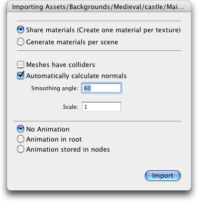

Meshes meshes make up a large part of your 3D worlds. You don't build your meshes in Unity, but in another application.
In Unity, we have done everything in our power to make this process as simple as possible. There are a lot of details, but the following should hold:
Basics
Unity's primary format is the cross-application format FBX. If you store files in the project directiory in this format, things should just work.
Maya
Just place the .mb file in your project folder. The files are automatically converted whenever you change them. The first time we have to import a Maya file, it takes up to 10 seconds - subsequent runs are usually less than 2 seconds.
More information on importing Maya files are here.
Cinema4D
Export your meshes in .fbx format into your project folder. This has been available as an export option since version 8.5.
More information on exporting to fbx are here here.
Lightwave
Export your meshes in .fbx format into your project folder.
More information on exporting to fbx are here here.
3D Studio Max
Export your files from the PC into the project folder in FBX format. More information on exporting to fbx are here here.
Blender
We have some support for reading .blend files. Since blender doesn't have an FBX exporter, there are quite a few missing features. Most notably, we don't do skinned meshes. Blender works great for doing background scenes.
More information on importing blender files are here.
Old-skool formats
We have limited support for 3DS, so if you find some of these objects on the net, you should be able to use them.
Our import pipeline is one of the things we are most proud of. We would like to get support for all 3D modellers to the level of Maya. We are pushing all we can at the people making the different apps. However: we are small, they are huge - so we could use some help in pushing. If you would like to see your 3D app get better integration, write them to let them know that you care about this.
Textures
Unity will attempt to hook up materials to your imported scenes - Basically, just place textures in a folder called 'Textures' next to the sccene file, or in any folder above it.
 |
Import settings.
To access the importing settings for a 3D scene file, click the Settings button in the project window, or control-click a scene file and select Import Settings....
|  |
| Property: | Function: |
|---|---|
| Enable this to generate material files near the found texture files. When enabled, different scenes will share the same material settings when they use the same textures. For the precise rules, see Material Generation, below. | |
| This will generate materials, so only this scene uses them. | |
| If this is enabled, your meshes will be imported with Mesh Colliders attached. This is recommended for background geometry, but never for geometry you move about. For more info, see Colliders, below. | |
| Enable this to automatically generate normals for the imported geometry. If enabled, the Smoothing Angle sets how sharp an edge has to be before it's converted into a hard edge. | |
| Unity's physic system expects 1 meter in the game world to be 1 unit in the imported file. If you like to model at a different scale, this is the place to fix it. | |
| No animation or skinnng is imported. | |
| Animations are stored in the scene's transform root objects. Use this when animating anything that has a hierarchy. | |
| Animations are stored together with the objects they animate. Use this when you have a complex animation setup and want full scripting control. |
Material Generation
Materials are found based on the following rules:
- Unity gets the name of the main diffuse material bound to the objects in the scene.
- Unity looks for a material with this name in a Folder called 'Materials' next to the scene
- Unity goes up the project folders, looking for the Material in a 'Materials' folder along the way.
If Unity couldn't find the Material, it tries to create one from the texture:
- Unity checks for a texture with the correct name in the same folder as the scene
- Unity checks for a texture with the correct name in a folder called 'Textures' next to the scene.
- Unity goes up the project folders, looking for the correct texture in a 'Textures' folder along the way.
- If unity finds the texture, it creates a 'Materials' folder next to it and creates a material in there.
Colliders
Unity features 2 primary types of colliders: Mesh colliders & Primitive colliders. Mesh colliders are imported together with your geometry and is used for background objects. When you enable Meshes Have Colliders in the import settings, the mesh becomes solid as far as the physic system is concerned.
If you are moving the object about (let's say it's a car), you can't use mesh colliders. Instead, you'll have to use primitive colliders. In this case you should disable the Meshes Have Colliders setting.
Animations
Animations are automatically imported from the scene. Note that at the moment 3ds files can not import animations. Unity imports multi take animations. Multi take animations allow you to store multiple animation clips eg. run animation, walk animation, jump animation in one file. If your 3D app does not support multi take animations you can create multiple copies of the same file with different animations. You can name the animation clips by adding an @ character in the file name. eg. you could have 3 copies of a monster.fbx file called: monster@walk.fbx, monster@run.fbx, monster@jump.fbx
Hints
- Merge your meshes together. Make them share materials and textures. This has a huge performance benefit.
- If you need to set up your objects further in Unity (adding physics, scripts or other coolness), save yourself a world of pain and name your objects properly in your 3D app.
- Make your meshes be centered on the world origin in your 3D app. This will make them easier to place in Unity.